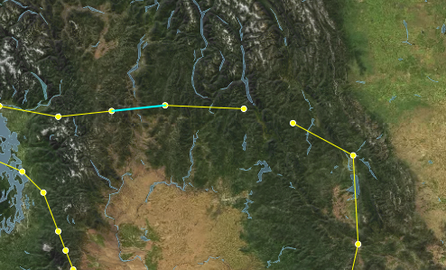
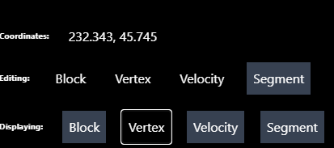

Intro

These are the docs for Celeri UI - the front end for setting up kinematic earthquake cycle models, for use with celeri
Using Celeri UI
[TODO] Write up user guide.
Development
Pre-requisites
Celeri UI is built using a few well-established tools.
The following are the foundational tools for working in the codebase - you'd need at least a basic understanding of these to be able to contribute to the code:
- Git - this is the source code management toolset.
- Typescript - this is the programming language we use.
- React - a library that makes it easier to generate & interact with the html in the page, by creating a set of components that manage their own display.
- Redux - a library that handles state management, and makes it easier to have deterministic & testable state changes.
- Mocha - a library to enable testing in Javascript/Typescript in a fairly isolated fashion.
- NodeJs - this is used to manage the packages we utilize, and execute the tests & build processes.
If you need to make adjustments to how the map is drawn, or the items displayed on top of the map, you will need to work with MapBox & MapBox Draw - however, it might be enough to look at things as you go.
The development server & build pipeline are based on Vite, and the actual build is deployed with github actions, which run the automated tests & a code quality check, before building and publishing the built version. We are using mdBook for the docs.
We recommend using GitPod for development, rather than setting up a local development environment, since it handles all the complexity of that for you. You can open a workspace by using the link above.
Set Up (Optional)
If you wish to set up a local development enviroment, you will need to install NodeJS on your machine, clone the git repository, and run npm install within it.
Development Command Line Commands
- If you are running in a local environment, or if you changed the dependencies (in the package.json file), you will need to run
npm installto ensure all the correct packages are installed. - To start the development server, you can run
npm run devin the command line. - To run the tests, run
npm run testin the commad line - To start the documentation server (so you can view the docs, or your changes to them in real time), run
npm run docs:dev - While developing, you will need to use
git commit,git pull&git push
Codebase Overview
When you first look at a new codebase it can be a bit confusing, so here we'll go over the major areas of the codebase to help you understand what's what:
-
./.github/workflows- this folder contains the test & build workflows that are run by github. Thetest.yml&codeql-analysis.ymlworkflows are run on every commit to either main or a Pull Request targeting main - these run the tests and ensure the code is in a good place. Thepublish-pages.ymlruns on every commit to main, but only if both the tests & code quality analysis pass, and it deploys a new build to github.io. It can be useful to look at the results of the workflows - which can be found here: https://github.com/brendanjmeade/celeri_ui/actions -
./.husky- this folder contains a simple command that runs before you can commit - it ensures the code is properly formatted, and runs all the tests locally. -
./docs/src- this folder contains the documentation sources - mdBook have a nice overview of how the folder is structured, as well as an overview of markdown - the format used for writing the docs themselves. -
./mocha/tests- this folder contains the automated tests - tests that don't involve visible components have the.spec.tsextension, while those that do involve visible components have thespec.tsxextension -
./public- this folder contains static assets published alongside the app - for example the icon -
./src- this is where the bulk of the app's code is locatedComponents- this is where we define the various visible components used by the UI - such as the various inspector panels, the top bar & the file explorerMap- this is where we define the Celeri Map - this is the most complex component in the app, and is used to wrap the MapBox api's and provide an interface for the kinds of data we care about.
Selectors- this is where we define more complex selectors - functions that take in some state and create a derived value, and remember the result in case the state hasn't changed - see createSelector for an overviewState- this is where we define and store the main state structures & the actions that can transform the state. Each sub-directory contains a separate "domain", where we can define the types we care about and the operations available to change it. For example - the "Block" directory defines what a block looks like in terms of the available properties, and provides operations for loading new block data (for example, from a file), creating blocks, editing blocks, moving blocks, and deleting them.Utilities- this is where we have utility functions/classes that don't particularly fit anywhere else. For example, the interface for handling the file system or the parsers for different file types (the various CSV, .json & .msh files).main.tsx- this file just loads the app, it is unlikely to need to changeindex.css- this file defines the styles we use - notice that it uses@tailwindto load the styles from TailwindCSSApp.tsx- this is the core of the App - this file coordinates the global state & various top-level components
-
./index.html- this is the main HTML file for the UI. You are unlikely to need to make changes here, but it is where things like the title of the tab are set -
./package.json- this is where we define the dependencies, development dependencies & runnable scripts for the develoment of celeri ui. The scripts are run usingnpm run {script name}- for example,npm run testruns the test script.
Development Cycle
As a rule, the following process is recommended for making changes:
-
Start by determining whether it is an automatically testible change. The main criteria for this are the degree to which it relies on interaction with the map display itself, and the variability of the UI. To provide some examples:
- State transformations - such as the "Merge Vertices" operation - are easily testible, since we can create a function that takes in a set of parameters, and outputs a result deterministically based entirely on those initial parameters.
- Most utility functions (so long as they don't require specific browser functions, or those functions can be abstracted away) - such as the parsing of
.mshfiles - are also testible, since they are also entirely deterministic functions. - Some UI elements - such as the File Explorer & Editable Item components - have a simple, clear interface, and simple state transformations, making them easy to test. However, this is more of a judgement call. For example, I could probably set up a test for the BlockPanel (the inspector for blocks), but decided against it because it is more of an aggregator of functionality, and most of the interaction with it will either involve things that have been tested (such as the Editable Item), or things that cannot be easily tested (such as the Map component). On the flip side, some UI elements felt trivial enough for me to not bother setting up a test (such as the SelectionModeDetails component) - because they basically function as a very simple display.
-
If it's a testible change, you want to follow this process:
- First, start by adding a test case (or adjusting existing test cases) to match the expected behaviour. Ideally you would do this "one requirement at a time", but sometimes you may need to batch things (for example, if there are a number of existing cases that need to be adjusted)
- Then run the test, to see if it fails. If it doesn't fail, since we didn't implement the behaviour, it means that either the test isn't testing the correct behaviour or the behaviour already exists - investigate that situation, and if the test isn't checking the correct thing adjust it.
- Once the test has failed, go in and implement an initial, simple version that passes the tests.
- Refactor/adjust the simple version to match the requirements better, ensuring it keeps passing the test.
- Repeat the process with the next requirement. This way you ensure that you keep the code as simple as possible while still meeting the requirements, since you focus on providing the simplest solution you can each time, and refactoring/cleaning up as you go along.
-
If it's not a testible change, make sure to have the application open to your local development server (if you are using gitpod, it should have been started automatically, and you can open it by opening the "Remote Explorer" panel on the left hand side, hovering over port 3000, and clicking the "Open Browser" button (the globe))
- You want to first get to the point where the expected changes would be apparent, essentially working through the workflow until it is impossible. This will help you clarify exactly what you are looking to change
- Start by making the simplest change to unblock the next step of the workflow
- Once that next step is working, refactor/adjust the code
- walk through the the workflow again to get to the next point where it's impossible or broken, and repeat the process, until the full flow works
- Go back to the top of this process for any alternative workflow/paths you can think of to get into the situation, to try and find edge cases or other ways it may break. Because these changes aren't autmatically tested, you need to manually work through things to try and find if anything broke during the process - this is why you want to make as much of the code base automatically tested, since it helps reduce accidentaly breakages.
For more information on this test-driven development approach, I'd recommend looking at the Continious Delivery youtube channel, specifically this playlist: https://www.youtube.com/playlist?list=PLwLLcwQlnXByqD3a13UPeT4SMhc3rdZ8q
Development Workflow Example
For this example, I'll be walking through resolving the following bug: https://github.com/brendanjmeade/celeri_ui/issues/40
In case you want to "follow along", check out the following commit: d379b87f459a28667ea1f3785ce34c9eb831dd5a
You can also look at the development-example branch.
First up is ensuring you have an up to date code base. I tend to like to create a new gitpod workspace for each issue I'm working on, since it ensures things are fresh and up to date, but if you are working locally you can just checkout main & git pull to ensure it's up to date.
Then, we want to explore the issue abit more - we need to reproduce it, and try to see where it breaks/causes issues. In this case - I took the following steps:
- Opening a segment file
- Select a single segment connects to two other segments, one on each end, and delete it

- this looks like it behaved correctly, neither of the vertices were deleted because they are still connected to other segments.
- Select one of the formerly adjacent segments, which now has one vertex that doesn't connect to any other segments, and delete it

- this also seems to behave correctly, the dangling vertex was deleted, but the connect vertex wasn't
- Select one of the segments further one step away from the edge, and delete it 
- The Select the "floating" segment and delete it

- This again works correctly - both the vertices connected to that segment are deleted.
- All of this suggests, to me, that the issue comes from having multiple segments deleted at once, so lets try that
- Switch to the Segment edit mode, and Lasso-select 3 connected segments, one of which has only one connected segment, then delete them

- Here we finally replicated the issue - the segments are deleted, but the vertices seem to all remain - including the one that was originally "dangling"

- Here we finally replicated the issue - the segments are deleted, but the vertices seem to all remain - including the one that was originally "dangling"
This suggests that the issue is that the segment deletion logic doesn't know how to handle multiple segments being deleted at once while also getting rid of their connected vertices. So lets take a look at the relevant tests. Because we are dealing with segment state, we should go take a look at the mocha/tests/SegmentState.spec.tsx
Looking through the code, I found 3 test cases that seem relevant - one starting on line 74, one on line 88 & one on line 103. Interestingly, it looks like the only difference between the first two is that the latter one also verifies that there are no vertices remaining. Since they don't test different scenarios, I'll delete the one at 74. So now we have two existing tests: can delete a segment & can delete a segment sharing a vertex with another segment.
Both of those behaviours remain appropriate for our current scenario, so lets create a new test, after the can delete a segment sharing a vertex with another segment.
I'll call it can delete multiple segments & their associated vertices:
it('Can delete multiple segments & their associated vertices', () => {
/* Here I'm setting up the initial state
I want to have 3 segments connected in a line
*/
const firstSegment = SegmentReducer(initialState, {
type: 'createSegmet',
payload: {
start: { lon: 0, lat: 0 },
end: { lon: 1, lat: 1 }
}
})
const secondSegment = SegmentReducer(firstSegment, {
type: 'createSegmet',
payload: {
start: { lon: 1, lat: 1 },
end: { lon: 2, lat: 2 }
}
})
const thirdSegment = SegmentReducer(secondSegment, {
type: 'createSegmet',
payload: {
start: { lon: 2, lat: 2 },
end: { lon: 3, lat: 3 }
}
})
// Now we run the delete operation, and tell it to delete the first two segments
const state = SegmentReducer(thirdSegment, {
type: 'deleteSegment',
payload: { index: [0, 1] }
})
// Investigating the resulting state, we expect to only have one segment left, and only two vertices
expect(state.segments).to.have.length(1)
expect(Object.keys(state.vertecies)).to.have.length(2)
// The segment we have left should be the third segment we created
expect(state.segments[0].start).to.equal(2)
expect(state.segments[0].end).to.equal(3)
// And the vertices we have left should match the vertices used by that segment
expect(state.vertecies[2].lat).equal(2)
expect(state.vertecies[3].lat).equal(3)
})
Then I run npm run test in the console, and check the result. Strangely, this new test still seems to pass! That tells us that the issue is either with the code calling the segment deletion function, or that our test doesn't correctly isolate the factors causing this bug.
Since our manual tests did suggest that this should correctly isolate the bug, let's take a look at how the segment deletion process gets triggered first.
My first instinct is to look in src/Components/SegmentsPanel.tsx, since I know the Segments Panel is where we delete segments. However, looking through there I don't see a specific location where deletion is called - but I do see that EditableItem has a deletable tag, so I look at the function it calls - setSegmentData. That get's passed in by the parent component, so we can search for where the segments panel is used - src/Components/Inspector.tsx on line 315.
Here, we look for setSegmentData, and find that it has the following code:
;(index, data): void => {
if (data) {
dispatch(editSegmentData({ indices: index, data }))
} else {
dispatch(deleteSegment({ index }))
}
}
So now we know that the dispatch looks correct - when no data is passed, this is treated as a delete operation, in which case we pass the indices of the segments we want to delete...
This takes us back to the drawing board - it seems like the issue isn't with the data coming in to our deletion operation, and it looks like our test suggests that the delete operation itself is working correctly. So lets see if maybe it's actually an issue with the map not refreshing to display the correct information?
To test this - we'll first repeat the steps we took before, so we get back to the step where we reproduced the issue:
Then, we force a refresh of the vertex display on the map, by swapping to Vertex edit mode - at which point our mystery vertices disapper!

This means it's not triggering an update of the vertices displayed. For most things in the maps, a re-render is triggered by the object representing the state being replaced - so this might be a situation where we are accidentally mutating an object in place rather than actually replacing it during the state change.
At this point, I'm not sure if this is the case, but it's the best theory I've got so we're going to try and investigate it. Lets go back out our test in SegmentState.spec.tsx.
We'll start by adding something to verify that our vertex object is actually being replaced:
// Added these next two lines
expect(state.vertecies).to.not.equal(thirdSegment.vertecies)
expect(state.vertexDictionary).to.not.equal(thirdSegment.vertexDictionary)
expect(state.segments).to.have.length(1)
expect(Object.keys(state.vertecies)).to.have.length(2)
expect(state.segments[0].start).to.equal(2)
expect(state.segments[0].end).to.equal(3)
expect(state.vertecies[2].lat).equal(2)
expect(state.vertecies[3].lat).equal(3)
and then we run it with npm run test - and it seems to pass. So the issue doesn't show up here, yet.
On the one hand, this does narrow things down a bit - it loos like this happens between the point where the vertices are changed, and the point where they are actually drawn on the map.
So now is the time to open the debugger, and look at things as they happen! In the browser, open the dev tools (either by tapping f12 on the keyboard, or right clicking somewhere that isn't the map and selecting "Inspect"), then navigate to the "Sources" tab.

Next, we need to find the file where we update drawn points - /src/Utilities/SetupPointSources.tsx - in the file hierarchy on the left - it'll be under workspace/celeri_ui/src/Utilities

Once we have the file open, we can set break points - points that will stop the execution of the code and let us see what's going on in real time - by clicking to the left of the line numbers at the points we want to inspect. In this case - we want to see when the vertices are updated, and it looks like that is hidden behind the if statement at line 38 - so we'll put the break point right after that:

Now, let's lasso-select a few segments again - you'll notice that the moment we switch to Lasso Selection mode, or to Segment edit mode (if you weren't in that mode before), the breakpoint triggers. This is too early for us to get information, so let's click the breakpoint again to remove it, and click the play button or f8 to resume.

First, we need to select some segments, with the lasso select tool. Then we'll re-add the breakpoint at the same place, and then we'll click the delete button in the segment panel.
This does seem to trigger our breakpoint - which means it should have the up to date information, but when we resume (by clicking play or f8), we see the issue persists...
So let's try to manually refresh - if we do so by changing the edit mode, it seems things happen as expected as well. But if we just try to toggle the vertex display, we see that it doesn't seem to trigger our breakpoint! And the vertices don't get hidden. 
Once I noticed that, I realized that we actually allow editing vertices while in Segment edit mode - so we actually have vertices passing in to the drawn points (points that can be moved) in addition to the vertex points, but we probably aren't updating those!
So - let's move to see what's happening where those points are set! First, lets get rid of the breakpoint (by clicking on it), and then we'll go in and find where the the drawn points are set - src/Utilities/SetupDrawnPointSource.tsx, open it up in the browser dev tools and set a breakpoint at line 37/38 - right at the start of the function. Then - we can start experimenting with adjusting the edit mode & the display, to try to find out what happens.
First, I set the edit mode to vertex, which triggered the function, and it went into the "EditMode.Vertex" case, where it sets the data for drawing the vertices. Then, I turned off the Vertex display, which did the same thing, but passes it an empty array of vertices - so the points disappears. I turned the vertex display back on, then swapped to Segment edit mode. This time, it went to the default case, and didn't set the drawn points at all! Meaning that so long as we are in Segment edit mode, the drawn vertices don't get updated. I tried deleting segments with the Lasso again, and saw the same things - it goes to the default case, which does nothing.
So let's try and fix that - we want to make a case for segment edit mode. Now - I think we would likely still want the ability to select & move vertices while in segment edit mode, since vertices & segments are so tightly coupled. The main difference between these modes should be the Lasso. So - we'll just make the Segment edit mode apply the same case as the Vertex edit mode in there src/Utilities/SetupDrawnPointSource.tsx:
switch (editMode) {
case EditMode.Segments: //added this line here
case EditMode.Vertex: {
setDrawnPointSource({
color: vertexSettings.color,
radius: vertexSettings.radius,
selectedColor: vertexSettings.activeColor,
selectedRadius: vertexSettings.activeRadius,
points: vertexSettings.hide
? []
: (Object.keys(segments.vertecies)
.map(v => {
const index = Number.parseInt(v, 10)
const vert = segments.vertecies[index]
if (vert) {
return {
longitude: vert.lon,
latitude: vert.lat,
index
}
}
return false
})
.filter(v => !!v) as unknown as {
longitude: number
latitude: number
index: number
}[]),
update: (index, vertex) => {
dispatch(moveVertex({ index, vertex }))
},
select: index => {
select.select('vertex', index)
}
})
break
}
To see how this works/if this works, we should refresh the page, reload the segment file, and then try to lasso-select & delete the segments. This time, it seems to work!
While playing around with this, however - I noticed a curious thing. Sometimes, when I lasso select some segments, it seems to also change the selected Vertices on the map - but not select them in the vertices tab. (note - I made regular vertices tiny and selected vertices huge to highlight the effect)

So - lets look at that. The displayed selections on the map get set in src/App - where it sets the map selections (line 418). Here we have what seems to be the source of the issue: the lasso selection is automatically set as the selection for "draw" - the points that can be moved on the map.
selections={{
segments: selectedSegment,
blocks: selectedBlock,
velocities: selectedVelocity,
vertices: selectedVertex,
draw: lassoSelection
}}
If we add a condition there to exclude the segment edit mode, then we should avoid selecting those situations!
selections={{
segments: selectedSegment,
blocks: selectedBlock,
velocities: selectedVelocity,
vertices: selectedVertex,
draw: editMode === EditMode.Segments ? undefined :lassoSelection
}}
For now we'll ignore the squiggly line under "draw" - that just means there is a type issue, which we'll fix if this solves the main issue we're seeing. Let's see if that same issue persists - I'll try selecting the same segments that caused the issue before. And it seems like it works!

So now, let's just resolve that type issue. The "selections" property of CeleryMap currently has a type of Record<string, number[]> - let's adjust that to Record<string, number[] | undefined>. We can do that by going to src/Components/Map/CeleriMap.tsx, going to the MapProperties interface (line 48), and adjusting the selctions property.
However, since we've made that change, it is worth checking whether that leads to any type issues - this is one of the benefits of using typescript! It can catch issue that might arise from our changes. A good way to do that, if you are running in gitpod, is to use the tsc command in the console. In this case, I got the following result:
gitpod /workspace/celeri_ui (development-example) $ tsc
src/Components/Map/MapArrows.ts:248:6 - error TS2322: Type 'number[] | undefined' is not assignable to type 'number[]'.
Type 'undefined' is not assignable to type 'number[]'.
248 updatedInternalSelections[sourcename] = selections[sourcename]
~~~~~~~~~~~~~~~~~~~~~~~~~~~~~~~~~~~~~
src/Components/Map/MapDrawnPoints.ts:113:51 - error TS2322: Type 'number[] | undefined' is not assignable to type 'number[]'.
Type 'undefined' is not assignable to type 'number[]'.
113 internalSelections: { ...internalSelections, draw: selections.draw }
~~~~
src/Components/Map/MapLineSegments.ts:237:6 - error TS2322: Type 'number[] | undefined' is not assignable to type 'number[]'.
Type 'undefined' is not assignable to type 'number[]'.
237 updatedInternalSelections[sourcename] = selections[sourcename]
~~~~~~~~~~~~~~~~~~~~~~~~~~~~~~~~~~~~~
src/Components/Map/MapPoints.ts:170:6 - error TS2322: Type 'number[] | undefined' is not assignable to type 'number[]'.
Type 'undefined' is not assignable to type 'number[]'.
170 updatedInternalSelections[sourcename] = selections[sourcename]
~~~~~~~~~~~~~~~~~~~~~~~~~~~~~~~~~~~~~
Found 4 errors in 4 files.
Errors Files
1 src/Components/Map/MapArrows.ts:248
1 src/Components/Map/MapDrawnPoints.ts:113
1 src/Components/Map/MapLineSegments.ts:237
1 src/Components/Map/MapPoints.ts:170
```
Looks like we forgot to adjust the `internalSelections` property of the map's state to match! The map has some internal states that duplicate properties, as a way to help it detect when things changed. So let's make that adjustment - you'll find it in the `MapState` interface (line 26 of `/src/Components/Map/CeleriMap.tsx`) - and we just need to change it to match the type of the `selections` property.
Let's run `tsc` again to confirm that it resolved our issue - and it should return nothing, which means the type issues were resolved!
So now we're basically done, we just have to run the tests locally, commit & push the result!
Once you do that, it is important to wait for the tests & code quality pass to run, and see whether it fails for whatever reason. You can do so here: [Github Actions](https://github.com/brendanjmeade/celeri_ui/actions) - in this case, the tests did fail, and looking through the details of the failure I found this:

Interestingly, running `npm run test` locally doesn't produce that result, but it's still worth resolving. So we go to the two locations mentioned in the error `src/Components/Map/MapLineSegments.ts` line 81 & `src/Components/Map/MapPolygonSources.ts` line 56, and replace the logical or `||` with the nullish operator `??`, like so:
```typescript
selected: selections[source.name]?.includes(line.index) || false
becomes
selected: selections[source.name]?.includes(line.index) ?? false
```
and then we run the tests, commit, push, and keep an eye on the github actions again.